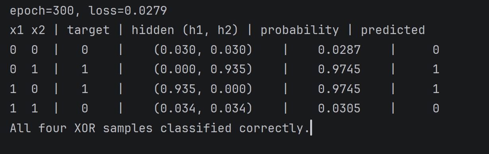

—— 从底层计算，到 Web 端的动态交互推演 ——
为了直观理解神经网络，我首先使用 Python 手写了包含 2 个隐藏神经元的前馈网络。经过 300 轮（Epoch）的迭代训练，Loss 收敛至 0.0279，成功跑通了 XOR（异或）逻辑分类任务。

在终端数据中，我发现 hidden 列的两个数值（h1 和 h2）极其关键。例如输入 [0, 1] 时，h2 激增至 0.935，h1 却为 0，神经网络正是通过这种“非线性激活”区分了数据。
为了让枯燥的终端数字变得直观，我用纯前端 JavaScript 实现了一个同款 2-2-1 结构的 MLP 模型。下面的动画并非视频，而是由代码在浏览器里实时计算、实时渲染的！
对比第一部分的 Python 终端输出，这个前端沙盒让我对“参数更新”有了肌肉记忆般的理解。看着线条从杂乱无章到清晰坚定，我才真正懂了什么叫 “神经网络在学习”。